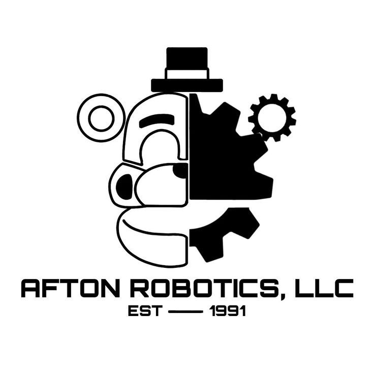
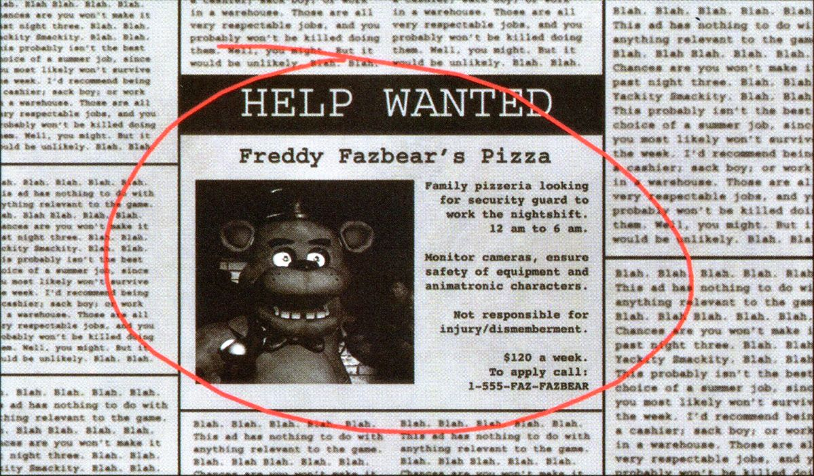
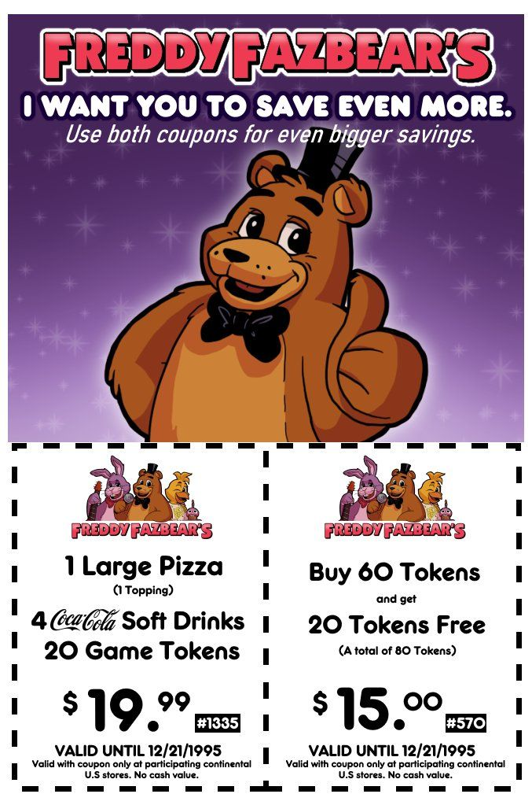

★ Fundação da Marca ★

A Freddy Fazbear's Pizza foi fundada pelos engenheiros e visionários William Afton e Henry Emily. Enquanto Henry dedicava-se ao design artístico e à magia do entretenimento infantil, William Afton, à frente da Afton Robotics, LLC, revolucionou a robótica ao criar os primeiros animatrônicos com tecnologia de ponta.
A parceria entre os dois deu origem a um império familiar que começou com o pequeno Fredbear's Family Diner e rapidamente se expandiu para diversas franquias ao redor do país.
Os primeiros mascotes — Freddy Fazbear, Bonnie, Chica e Foxy — foram projetados nos laboratórios da Afton Robotics e rapidamente se tornaram símbolos mundiais de diversão.
★ Inovação e Tecnologia Afton ★
A Afton Robotics sempre esteve na vanguarda da robótica de entretenimento. Nossos animatrônicos combinam engenharia de precisão, inteligência artificial e design artístico para criar experiências inesquecíveis.
⚙️ Endosqueletos Modulares
Estruturas internas em liga de aço e alumínio, com juntas articuladas que simulam movimentos naturais. O design modular permite fácil manutenção e substituição de peças sem a necessidade de desmontagem completa.
🎛️ Servomotores de Precisão
Atuadores servo-hidráulicos com encoder de alta resolução garantem movimentos suaves e silenciosos, ideais para performances musicais sincronizadas e interação com o público.
📷 Visão Computacional
Câmeras embutidas com algoritmos de visão computacional permitem que os animatrônicos reconheçam clientes frequentes, ajustem expressões faciais e até interajam de forma personalizada com as crianças (sempre sob rigoroso controle de privacidade).
🔊 Áudio Sincronizado
Sistema de áudio bidirecional com bancos de dados de falas pré-gravadas e síntese vocal em tempo real. Permite que os animatrônicos cantem, contem piadas e façam anúncios com clareza e sincronia labial perfeita.
🛡️ Sensores de Proximidade
Sensores ultrassônicos e de pressão mapeiam o ambiente em 360° e detectam a presença de pessoas a até 2 metros de distância. Isso garante que os robôs parem ou desviem automaticamente para evitar colisões — priorizando a segurança dos visitantes.
🔧 Spring‑Lock (Aposentada)
Nos primeiros modelos, utilizamos um inovador sistema de molas internas que permitiam o traje ser usado tanto como roupa quanto como robô autônomo. Embora revolucionária para a época, essa tecnologia foi descontinuada e substituída por sistemas elétricos mais seguros e confiáveis.
🌐 IoT e Diagnóstico Remoto
Todos os animatrônicos modernos são equipados com módulos de rede que enviam relatórios de saúde operacional em tempo real para nossa central de monitoramento. Problemas mecânicos são detectados antes mesmo de se tornarem visíveis.
✨ Plataforma Glamrock
A mais recente evolução da Afton Robotics. Robôs com IA avançada, capazes de aprender interações, personalizar diálogos e realizar manutenção autônoma. Iluminação LED integrada, alto-falantes de alta fidelidade e baterias de longa duração tornam o Mega Pizzaplex a experiência mais imersiva do mundo.
★ Linha do Tempo e Franquias ★
Década de 70 / 1983
Fredbear's Family Diner – A primeira casa da dupla Afton & Emily. Apresentava Fredbear e Spring Bonnie como atrações principais. Foi o embrião de tudo o que viria a seguir.
* Tecnologia Spring-Lock em uso.1983
Freddy Fazbear's Pizza (Unidade Original) – A primeira pizzaria com o nome que conhecemos hoje. Os shows animatrônicos de Freddy, Bonnie, Chica e Foxy tornaram-se imediatamente um sucesso de bilheteria.
* Primeira versão dos servomotores patenteados pela Afton Robotics.1987
Nova Franquia e Linha Toy – Reabrimos com uma nova unidade e modelos modernizados (Toy Freddy, Toy Bonnie, Toy Chica), apresentando reconhecimento facial e maior interatividade com o público.
* Sistema de visão computacional integrado aos olhos dos robôs.Década de 2020
Fazbear's Fright – Uma atração de terror temática baseada em "lendas urbanas" sobre a marca. Foi fechada para "preservação histórica" após um pequeno incêndio elétrico.
* Materiais originais recuperados e levados ao arquivo histórico.Atualidade
Mega Pizzaplex – O maior complexo de entretenimento da história da Fazbear Entertainment. Integra a tecnologia Glamrock, realidade virtual, novos animatrônicos com IA reativa e uma experiência imersiva para toda a família.
* Atualizações over-the-air (OTA) e diagnósticos preditivos.★ Comunicado Oficial ★
A Freddy Fazbear Entertainment mantém altos padrões de qualidade e segurança para todos os visitantes de suas franquias.
Unidades antigas (como o Fredbear's Family Diner e a atração Fazbear's Fright) passaram por reformas e atualizações devido a mudanças estruturais e tecnológicas. Hoje, focamos nossos esforços no Mega Pizzaplex, a nova casa da diversão.
Registros históricos de todas as franquias podem ser encontrados no arquivo interno da empresa, disponível para pesquisadores autorizados.
★ Área de Documentos ★
Documentos antigos, relatórios técnicos da Afton Robotics e registros administrativos de todas as franquias foram preservados pela empresa.
Acesso destinado a pesquisadores, historiadores e funcionários autorizados.
Acessar Arquivos Internos★ Explore Nossos Departamentos ★
Conheça outros arquivos e equipes que fazem parte da história da Freddy Fazbear Entertainment.

🖼️ Galeria
Registros visuais, posters e arquivos de imagem da empresa.
Ver Galeria
👥 Equipe
Conheça os profissionais e colaboradores que mantêm a magia acontecendo.
Conheça a Equipe
🎉 Eventos
Festas, aniversários e apresentações especiais realizadas em nossas unidades.
Ver Eventos
📋 Carreiras
Vagas abertas e oportunidades para fazer parte da nossa família.
Ver Vagas